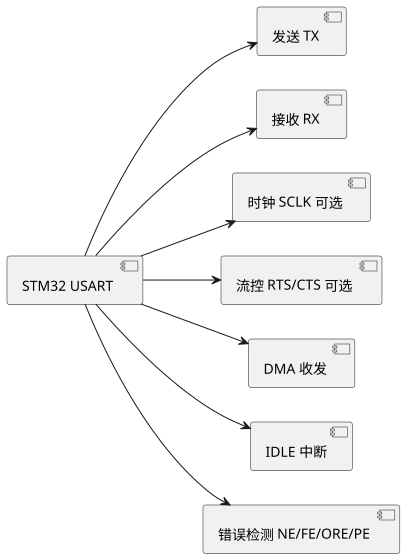

第 18 章 串口通信 USART
学习目标
- 理解 USART 与 UART 的区别
- 能够使用 CubeMX 配置 USART（波特率 115200 / 8N1）
- 掌握 HAL_UART 库函数（阻塞/中断/DMA）
- 实现中断接收配合环形缓冲区
- 实现 DMA + IDLE 中断接收不定长数据
- 设计简单的多机通信协议
- 掌握逻辑分析仪、printf、SEGGER RTT 三种串口调试技巧
18.1 USART 与 UART 区别
UART（Universal Asynchronous Receiver/Transmitter）是通用异步收发器，仅需 TX/RX/GND 三根线即可通信；USART（Universal Synchronous/Asynchronous Receiver/Transmitter）在 UART 基础上增加了一根时钟线 SCLK，可工作在同步模式，常用于智能卡接口、SPI 兼容主模式等。STM32F407 共有 3 个 USART（USART1/2/3，支持同步）+ 2 个 UART（UART4/5，仅异步）+ 4 个 USART（USART6 仅异步扩展、其它 APB 总线，部分型号含更多）。
| 对比项 | UART | USART |
|---|---|---|
| 同步时钟 | 无 | 有 SCLK 引脚（可选） |
| 异步通信 | 支持 | 支持 |
| 同步通信 | 不支持 | 支持（智能卡/SPI 兼容） |
| 硬件流控 | 可选 RTS/CTS | 可选 RTS/CTS |
| 典型最大波特率 | f_PCLK/16 | f_PCLK/8（过采样 8） |
| STM32F407 数量 | UART4/5 共 2 个 | USART1/2/3/6 共 4 个 |
异步通信是日常应用主流，本章后续以异步模式为例。USART1 挂在 APB2（最高 168 MHz），最大波特率 10.5 Mbps；USART2/3/UART4/5/USART6 挂在 APB1（84 MHz），最大 5.25 Mbps。教学常用 9600/115200 bps，远低于上限。

查看 PlantUML 源码
@startuml
skinparam defaultFontName "Microsoft YaHei"
skinparam backgroundColor #ffffff
left to right direction
component "STM32 USART" as A
component "发送 TX" as B
component "接收 RX" as C
component "时钟 SCLK 可选" as D
component "流控 RTS/CTS 可选" as E
component "DMA 收发" as F
component "IDLE 中断" as G
component "错误检测 NE/FE/ORE/PE" as H
A --> B
A --> C
A --> D
A --> E
A --> F
A --> G
A --> H
@enduml18.2 CubeMX 配置 USART
以 USART1 为例（PA9/PA10），在 CubeMX 中配置如下：
- Pinout → Connectivity → USART1 → Mode 选 Asynchronous（异步）。
- Parameter Settings：Baud Rate=115200，Word Length=8 Bits (including Parity)，Parity=None，Stop Bits=1，Data Direction=Receive and Transmit，Over Sampling=16 samples。
- NVIC Settings → 勾选 USART1 global interrupt（中断接收必备）。
- DMA Settings → Add → USART1_RX，Circular 模式（DMA 接收必备）。
- Project Manager → 生成代码。
注意：Word Length 含校验位，例如选 8E1（8 数据位 + 偶校验 + 1 停止位）时 Word Length 应设 9 Bits（含校验）。串口调试助手（如 SecureCRT/串口调试器）参数必须与 STM32 完全一致。
18.3 HAL_UART 库函数
| 函数 | 模式 | 说明 |
|---|---|---|
| HAL_UART_Transmit | 阻塞 | 发送，超时返回 |
| HAL_UART_Receive | 阻塞 | 接收指定长度，超时返回 |
| HAL_UART_Transmit_IT | 中断 | 非阻塞发送，完成后回调 TxCpltCallback |
| HAL_UART_Receive_IT | 中断 | 非阻塞接收 N 字节，完成后回调 RxCpltCallback |
| HAL_UART_Transmit_DMA | DMA | DMA 发送，零 CPU 占用 |
| HAL_UART_Receive_DMA | DMA | DMA 接收，零 CPU 占用 |
| HAL_UARTEx_ReceiveToIdle_IT | 中断+IDLE | 不定长接收，IDLE 触发 RxEventCallback |
| HAL_UARTEx_ReceiveToIdle_DMA | DMA+IDLE | DMA 不定长接收，最优方案 |
阻塞方式最简单但占用 CPU；中断方式适合少量数据；DMA 方式由 DMA 控制器搬运数据，CPU 完全解放，适合高波特率或大量数据。HAL_UART_Receive_IT 每次接收固定长度，超出部分需再次启动；不定长场景应使用 IDLE + DMA。
18.4 中断接收与环形缓冲区
当数据持续到来时，固定长度中断接收难以应对长度可变的情况。常见做法是单字节中断接收 + 环形缓冲区（Ring Buffer）暂存，主循环再解析。下例实现 USART1 单字节中断接收，存入环形缓冲区：
/* USER CODE BEGIN PV */
#define RBUF_SIZE 256
volatile uint8_t rbuf[RBUF_SIZE];
volatile uint16_t rbuf_head = 0, rbuf_tail = 0;
/* USER CODE END PV */
/* USER CODE BEGIN 2 */
HAL_UART_Receive_IT(&huart1, &rx_byte, 1); /* 启动单字节接收 */
/* USER CODE END 2 */
/* USER CODE BEGIN 4 */
void HAL_UART_RxCpltCallback(UART_HandleTypeDef *huart)
{
if (huart->Instance == USART1) {
rbuf[rbuf_head] = rx_byte;
rbuf_head = (rbuf_head + 1) % RBUF_SIZE;
HAL_UART_Receive_IT(&huart1, &rx_byte, 1); /* 重新启动接收 */
}
}
/* 主循环调用：从环形缓冲区取 1 字节，无数据返回 -1 */
int rbuf_getc(void)
{
if (rbuf_tail == rbuf_head) return -1;
uint8_t c = rbuf[rbuf_tail];
rbuf_tail = (rbuf_tail + 1) % RBUF_SIZE;
return c;
}
/* USER CODE END 4 */
环形缓冲区通过 head/tail 两个指针循环递增实现先进先出（FIFO），是嵌入式通信最常用的数据结构。注意单字节中断在高波特率下中断频繁，CPU 占用较高，建议高速场景使用 DMA。
18.5 DMA 方式接收不定长数据
STM32 USART 在 RX 长时间空闲（一个字节时长未收到新数据）时会置 IDLE 标志并触发中断。结合 DMA，可实现"任意长度数据自动接收 + 接收完成自动通知"，是工程实践中的最优方案。HAL 库提供 HAL_UARTEx_ReceiveToIdle_DMA 封装：
/* USER CODE BEGIN 2 */
HAL_UARTEx_ReceiveToIdle_DMA(&huart1, rx_buf, sizeof(rx_buf));
/* USER CODE END 2 */
/* USER CODE BEGIN 4 */
void HAL_UARTEx_RxEventCallback(UART_HandleTypeDef *huart, uint16_t Size)
{
if (huart->Instance == USART1) {
/* Size 为本次实际接收字节数 */
printf("recv %d bytes: %.*s\r\n", Size, Size, (char *)rx_buf);
HAL_UARTEx_ReceiveToIdle_DMA(&huart1, rx_buf, sizeof(rx_buf)); /* 继续接收 */
}
}
/* USER CODE END 4 */
该方案优势：① DMA 搬运数据，零 CPU 占用；② IDLE 中断精准识别数据帧边界，无需协议头尾；③ 配合 Circular 模式 DMA，无需在回调中重启。广泛用于 GPS NMEA、Modbus、自定义协议解析等场景。
18.6 多串口协同与协议设计
实际项目通常多串口同时工作：USART1 接 PC 调试、USART2 接蓝牙模块、UART4 接 GPS、USART3 接 RS485 传感器。设计自定义协议时建议包含以下要素：
- 帧头：1-2 字节固定值（如 0xAA 0x55），用于同步帧起始。
- 长度：1-2 字节，表示后续数据字节数，便于校验完整性。
- 命令字：1 字节，区分不同指令（如 0x01 读、0x02 写）。
- 数据：N 字节，可变长。
- 校验：1-2 字节，CRC8/CRC16/XOR 任选，确保数据正确性。
帧格式示意：[AA 55] [LEN] [CMD] [DATA...] [CRC]。解析时建议状态机法：等待帧头 → 读长度 → 等待 LEN 字节数据 → 校验 CRC → 执行命令。CRC 推荐使用 CRC16-Modbus（多项式 0x8005），检错能力强。
18.6.1 标准 printf 函数实现（STM32 HAL 库）
STM32 工程（无论 Keil MDK / STM32CubeIDE / GCC）都遵循 ARM CMSIS C 库的"标准 I/O 重定向"约定：printf 底层会调用 __io_putchar(int ch) 或 fputc(int ch, FILE *f)（不同工具链名不同），重写该函数即可让 printf 输出走 USART1。相比 STC，STM32 的优势是支持 %f 浮点、%ld 长整型，并且可用 MicroLIB 进一步缩减代码体积。
实现原理：C 库 printf → 内部 _write 系统调用 → __io_putchar 钩子 → 调用 HAL_UART_Transmit 发送一个字节 → 等待发送完成返回。
实现步骤（以 Keil MDK + HAL 库 + USART1 为例）：
- CubeMX 配置 USART1：模式 Asynchronous，参数 115200-8-N-1，使能 USART1 global interrupt（推荐用中断发送，避免阻塞）。
- 包含头文件：在
main.c顶部#include <stdio.h>和#include "usart.h"（CubeMX 自动生成）。 - 启用 MicroLIB（Keil MDK 特有）：Project → Options → Target 勾选 "Use MicroLIB"。MicroLIB 体积约为标准 C 库 1/3，但默认支持
%d %s %x %f，是嵌入式调试首选。STM32CubeIDE 则默认用 newlib-nano，效果等同。 - 重写 fputc / __io_putchar：在
/* USER CODE BEGIN 4 */区域内添加 fputc 实现，调用HAL_UART_Transmit(&huart1, (uint8_t*)&ch, 1, 0xFFFF)。Keil MDK 重写fputc，STM32CubeIDE 重写__io_putchar。 - 处理 \n 自动回车：与 STC 同理，检测到
'\n'先输出'\r'，否则 PC 端串口助手显示阶梯状。 - 编译验证：烧录后在 main 循环调用
printf("tick=%lu\r\n", HAL_GetTick());，PC 端 115200 8N1 应收到字符串。
/* main.c - STM32F407 printf 重定向（Keil MDK + HAL 库）
* USART1: PA9(TX) PA10(RX), 115200 8N1
*/
/* USER CODE BEGIN Includes */
#include <stdio.h>
#include "usart.h"
/* USER CODE END Includes */
/* USER CODE BEGIN 4 */
/* 重写 fputc 钩子，让 printf 走 USART1 */
int fputc(int ch, FILE *f)
{
(void)f;
if (ch == '\n') { /* 自动回车 */
uint8_t cr = '\r';
HAL_UART_Transmit(&huart1, &cr, 1, 0xFFFF);
}
uint8_t c = (uint8_t)ch;
HAL_UART_Transmit(&huart1, &c, 1, 0xFFFF); /* 阻塞发送 1 字节 */
return ch;
}
/* USER CODE END 4 */
/* 主程序 */
int main(void)
{
HAL_Init();
SystemClock_Config();
MX_USART1_UART_Init();
/* 必须先 Init 再 printf */
printf("\r\n============================\r\n");
printf(" STM32F407 printf 重定向演示\r\n");
printf(" HAL 版本: %lu\r\n", HAL_GetHalVersion());
printf(" 系统时钟: %lu Hz\r\n", SystemCoreClock);
printf("============================\r\n");
float temp = 25.6f;
uint32_t loop = 0;
while (1) {
loop++;
printf("loop=%lu, temp=%.2f C, tick=%lu ms\r\n",
loop, temp, HAL_GetTick());
HAL_Delay(1000);
}
}
fputc 改名为 __io_putchar（或同时定义两者，由 syscalls.c 选择）。STM32CubeIDE 默认用 newlib-nano，已在 syscalls.c 提供 _write → __io_putchar 桥接，无需手动写 _write。
HAL_UART_Transmit 在 115200 bps 下每字符约 87 μs，连续 printf 会占满 CPU。对实时性敏感场景改用 DMA + 中断发送：
- 定义发送缓冲
uint8_t tx_buf[128]，vsnprintf格式化到缓冲。 - 调用
HAL_UART_Transmit_DMA(&huart1, tx_buf, len)，DMA 搬运完成后中断回调释放缓冲。 - 实现"环形队列"避免前次未发完就被覆盖。
- 未勾选 MicroLIB：Keil MDK 默认链接完整 ARM C 库，
printf体积约 8KB 且可能因半主机模式导致运行到__use_no_semihosting卡死。勾选 MicroLIB 即解决。 - 半主机模式（Semihosting）：未重写 fputc 时 printf 会触发 BKPT 指令进入调试器，脱离调试器运行即卡死。重写 fputc 后自动关闭半主机。
- 浮点不支持：STM32F4 默认 FPU 开启，但 printf 浮点需在 Linker → Misc 加
-u _printf_float（GCC）或勾选 MicroLIB（MDK）。 - 多线程：FreeRTOS 多任务同时 printf 会乱序，需用互斥量
osMutexAcquire包裹或改用 SEGGER RTT。
18.6.2 基于内部 Flash 的掉电存储
实际项目中常常需要保存用户配置（如校准参数、设备地址、阈值上下限、累计电能等），断电或重启后仍能读回。STM32F407 内置 1 MB Flash（部分型号 512 KB），除存放主程序外，可划出一段未使用的扇区作为"用户数据区"实现掉电存储。Flash 的特点是：断电不丢失、写入前必须先擦除、擦除只能整扇区进行、擦除后所有位变 1，写入只能把 1 变 0。
STM32F407 Flash 扇区布局（参考 RM0090 参考手册）：
| 扇区 | 起始地址 | 大小 | 用途建议 |
|---|---|---|---|
| Sector 0 | 0x08000000 | 16 KB | 中断向量表 + 启动代码 |
| Sector 1 | 0x08004000 | 16 KB | 主程序前半 |
| Sector 2 | 0x08008000 | 16 KB | 主程序中段 |
| Sector 3 | 0x0800C000 | 16 KB | 主程序后半 |
| Sector 4 | 0x08010000 | 64 KB | 主程序主体 |
| Sector 5 | 0x08020000 | 128 KB | 主程序主体 |
| Sector 6 | 0x08040000 | 128 KB | 主程序主体 |
| Sector 7 | 0x08060000 | 128 KB | 主程序主体 |
| Sector 8 | 0x08080000 | 128 KB | 主程序主体（大型工程使用） |
| Sector 9 | 0x080A0000 | 128 KB | 主程序主体（大型工程使用） |
| Sector 10 | 0x080C0000 | 128 KB | 主程序主体（大型工程使用） |
| Sector 11 | 0x080E0000 | 128 KB | 用户数据区（推荐） |
设计原则：选 128 KB 的 Sector 11 作为用户数据区——大多数工程主程序 < 768 KB（Sector 0–10 共 896 KB 足够），Sector 11 完全空闲可专门用于配置存储。若工程确实需要更多空间，可选用 Sector 10 备份，但需在 Linker Script 中明确排除该段，防止编译器填充代码。
实现原理：① 定义一个结构体 Config_t 承载所有配置字段；② 写入前解锁 Flash → 擦除 Sector 11 → 按字写入结构体字节流 → 加锁；③ 读取时直接以指针访问 Sector 11 起始地址即可（Flash 映射到 CPU 地址空间，可直接当 ROM 读）。
实现步骤：
- 定义配置结构体：所有字段打包为
typedef struct，建议末尾加uint32_t magic魔数与uint32_t crc校验，用于开机判断 Flash 是否已写入有效配置。 - 选择存储地址：
#define CONFIG_ADDR 0x080E0000（Sector 11 起始），#define CONFIG_SECTOR FLASH_SECTOR_11。 - 读配置：用
Config_t *cfg = (Config_t*)CONFIG_ADDR;把 Flash 当作 const 指针读，校验 magic 与 crc 通过则用，否则填默认值。 - 写配置：
HAL_FLASH_Unlock()解锁 Flash 控制寄存器（默认上锁防误写）。- 构造
FLASH_EraseInitTypeDef：TypeEraser = FLASH_TYPEERASE_SECTORS，Sector = CONFIG_SECTOR，NbSectors = 1，VoltageRange = FLASH_VOLTAGE_RANGE_3（3.3V 供电）。 HAL_FLASHEx_Erase(&erase, &err)擦除整个扇区，等待完成。- 循环
HAL_FLASH_Program(FLASH_TYPEPROGRAM_WORD, addr, data)按 32 位字逐个写入结构体字节。 HAL_FLASH_Lock()重新加锁。
- 磨损均衡：Flash 单扇区擦写寿命约 10000 次。若频繁保存（如每秒一次），应在 Sector 11 内做"页式日志"——每次写下一页未用空间，写满 128 KB 才整体擦除，寿命提升数百倍。
- 异常处理：写入过程中断电会留下半截数据，靠 magic + crc 在下次开机时识别"损坏"，恢复默认值并提示用户重新配置。
/* flash_config.c - STM32F407 内部 Flash 掉电存储配置
* 存储 Sector 11 (0x080E0000, 128 KB)
* 编译环境：STM32CubeMX + HAL 库
*/
#include "stm32f4xx_hal.h"
#include <string.h>
#include <stdint.h>
#define CONFIG_ADDR 0x080E0000UL
#define CONFIG_SECTOR FLASH_SECTOR_11
#define CONFIG_MAGIC 0x434F4E46UL /* "CONF" */
/* ---------- 1. 配置结构体 ---------- */
typedef struct __attribute__((packed)) {
uint32_t magic; /* 魔数：标识是否已写入有效配置 */
uint32_t baudrate; /* 串口波特率 */
uint8_t dev_addr; /* Modbus 设备地址 1-247 */
uint8_t reserved1;
uint16_t reserved2;
float temp_high; /* 温度上限阈值 */
float temp_low; /* 温度下限阈值 */
uint32_t energy_kwh_x10; /* 累计电能 ×10 倍（避免 float 不精确） */
uint32_t boot_count; /* 启动次数计数 */
uint32_t crc; /* CRC32 校验 */
} Config_t;
/* 默认配置（首次上电或损坏时使用） */
static const Config_t default_cfg = {
.magic = CONFIG_MAGIC,
.baudrate = 115200,
.dev_addr = 1,
.reserved1 = 0,
.reserved2 = 0,
.temp_high = 50.0f,
.temp_low = 10.0f,
.energy_kwh_x10 = 0,
.boot_count = 0,
.crc = 0, /* 实际计算后填入 */
};
/* 简易 CRC32（多项式 0xEDB88320，与 zlib 一致） */
static uint32_t crc32_calc(const uint8_t *data, uint32_t len)
{
uint32_t crc = 0xFFFFFFFF;
for (uint32_t i = 0; i < len; i++) {
crc ^= data[i];
for (int j = 0; j < 8; j++) {
crc = (crc >> 1) ^ (0xEDB88320 & (-(int32_t)(crc & 1)));
}
}
return ~crc;
}
/* ---------- 2. 读取配置（直接指针访问 Flash） ---------- */
int Config_Load(Config_t *out)
{
const Config_t *flash_cfg = (const Config_t *)CONFIG_ADDR;
/* Flash 可直接当 ROM 读，无需解锁 */
if (flash_cfg->magic != CONFIG_MAGIC) {
*out = default_cfg;
return -1; /* 未配置，用默认值 */
}
/* 验证 CRC：计算 magic~boot_count 字段的 CRC，应等于 crc 字段 */
uint32_t calc = crc32_calc((const uint8_t*)flash_cfg,
sizeof(Config_t) - sizeof(uint32_t));
if (calc != flash_cfg->crc) {
*out = default_cfg;
return -2; /* CRC 错，配置损坏 */
}
*out = *flash_cfg;
return 0; /* OK */
}
/* ---------- 3. 写入配置（解锁-擦除-写-加锁） ---------- */
HAL_StatusTypeDef Config_Save(const Config_t *cfg)
{
HAL_StatusTypeDef st;
uint32_t err;
FLASH_EraseInitTypeDef erase;
/* 1) 拷贝到 SRAM 并计算 CRC */
Config_t buf = *cfg;
buf.magic = CONFIG_MAGIC;
buf.crc = crc32_calc((const uint8_t*)&buf,
sizeof(Config_t) - sizeof(uint32_t));
/* 2) 解锁 Flash */
st = HAL_FLASH_Unlock();
if (st != HAL_OK) return st;
/* 3) 擦除 Sector 11 */
erase.TypeErase = FLASH_TYPEERASE_SECTORS;
erase.Sector = CONFIG_SECTOR;
erase.NbSectors = 1;
erase.VoltageRange = FLASH_VOLTAGE_RANGE_3; /* 2.7-3.6V 供电 */
st = HAL_FLASHEx_Erase(&erase, &err);
if (st != HAL_OK) { HAL_FLASH_Lock(); return st; }
/* 4) 按字（32 bit）写入 */
uint32_t *src = (uint32_t*)&buf;
uint32_t addr = CONFIG_ADDR;
uint32_t words = (sizeof(Config_t) + 3) / 4;
for (uint32_t i = 0; i < words; i++) {
st = HAL_FLASH_Program(FLASH_TYPEPROGRAM_WORD,
addr, src[i]);
if (st != HAL_OK) { HAL_FLASH_Lock(); return st; }
addr += 4;
}
/* 5) 重新加锁 */
HAL_FLASH_Lock();
return HAL_OK;
}
/* ---------- 4. 使用示例 ---------- */
Config_t g_cfg;
int main(void)
{
HAL_Init();
SystemClock_Config();
MX_USART1_UART_Init();
/* 开机加载配置 */
int r = Config_Load(&g_cfg);
if (r == 0) {
printf("配置加载成功：baud=%lu, dev=%u, temp_h=%.1f\r\n",
g_cfg.baudrate, g_cfg.dev_addr, g_cfg.temp_high);
} else if (r == -1) {
printf("首次启动，使用默认配置\r\n");
} else {
printf("配置损坏（错误码 %d），已恢复默认\r\n", r);
}
/* 启动计数 +1 并保存 */
g_cfg.boot_count++;
HAL_StatusTypeDef st = Config_Save(&g_cfg);
printf("已保存第 %lu 次启动记录，状态=%d\r\n",
g_cfg.boot_count, st);
while (1) {
/* 主循环：可通过串口命令修改 g_cfg 并调用 Config_Save */
HAL_Delay(1000);
}
}
- 对齐：结构体加
__attribute__((packed))紧凑布局，但 ARM 32 位字写入要求地址 4 字节对齐——结构体大小应为 4 的倍数，必要时末尾加保留字段补齐。 - 电压范围：STM32F4 在 2.7-3.6V 供电下擦写用
VOLTAGE_RANGE_3，若用 1.8V 低压需 RANGE_1，但 F407 不支持 1.8V 模式。 - 擦写过程禁止中断：擦除期间 Flash 不可读，CPU 取指会停顿；若擦除期间触发中断（中断向量在 Sector 0），程序会跑飞。建议在
HAL_FLASHEx_Erase前__disable_irq()，结束后__enable_irq()。 - OTA 升级冲突：若用 IAP/OTA 升级，要避免升级过程意外写 Sector 11，导致配置被擦除。建议升级流程先备份 Sector 11 → 擦写主程序 → 恢复配置。
- 磨损均衡：若每秒保存一次，单扇区寿命 10000 次仅能用 2.7 小时。应改为"环形页写"：Sector 11 分 32 页（每页 4KB），每次写下一页未用空间，写满再整体擦除，寿命可达 32 万次。
18.7 串口调试技巧
| 工具 | 优点 | 缺点 | 典型场景 |
|---|---|---|---|
| printf 重定向 | 简单、随时可输出 | 占用 UART、阻塞、需串口助手 | 调试日志 |
| 逻辑分析仪 | 看到原始波形、时序、协议解码 | 需硬件、UI 学习成本 | 排查通信异常、协议解码 |
| SEGGER RTT | 通过 SWD 输出，不占用 UART，极速 | 需 J-Link/ST-Link RTT 通道 | 实时日志、密集输出 |
| ITM/EventRecorder | SWO 引脚输出，CMSIS 标准 | 需 SWO 物理连接与 IDE 支持 | 性能分析 |
本章小结
- USART 比 UART 多一根 SCLK，可同步通信；STM32F407 有 USART1/2/3/6 + UART4/5。
- CubeMX 配置 USART 115200 8N1 是最常用配置，参数需与上位机完全一致。
- HAL_UART 库函数分阻塞/中断/DMA 三类，DMA 性能最优。
- 环形缓冲区配合单字节中断接收是经典的可变长数据处理方案。
- DMA + IDLE 中断是接收不定长数据的最优方案，HAL_UARTEx_ReceiveToIdle_DMA 已封装。
- 多机通信协议建议含帧头/长度/命令/数据/CRC 五要素，状态机解析。
- 重写
fputc（Keil MDK）或__io_putchar（STM32CubeIDE）+ 勾选 MicroLIB 即可让 printf 走 USART；DMA + 环形队列方案适合实时性敏感场景。 - 利用内部 Flash 末尾空闲扇区（推荐 Sector 11，0x080E0000，128 KB）可实现掉电配置存储：结构体 + magic + CRC32 校验，写入流程为 Unlock → Erase → Program → Lock。
- printf、逻辑分析仪、SEGGER RTT 是三大调试利器，按场景选用。
思考题与习题
- 简述 USART 与 UART 的区别，并说明同步模式在什么场景下使用。
- 已知 USART1 时钟 84 MHz、过采样 16，要实现 921600 bps 波特率，给出 BRR 整数与小数部分。
- 编写代码：USART1 阻塞发送字符串 "Hello STM32"，并通过中断接收 5 字节回显到 PC。
- 设计一个简单通信协议：帧头 0xAA55 + 长度 + 数据 + CRC8，写出 STM32 端解析状态机伪代码。
- 说明 DMA + IDLE 中断接收不定长数据的原理，对比单字节中断接收的优势。
- 对比 printf、逻辑分析仪、SEGGER RTT 三种调试方式，各举一个适用场景。
参考文献
- ST 官方. STM32F405/415/407/417 参考手册 RM0090 [Z]. 2024. https://www.st.com/
- ST 官方. STM32F4xx HAL User Manual UM1025 [Z]. 2024. https://www.st.com/
- ST 官方. Using the USART on STM32F4 AN4031 [Z]. 2024. https://www.st.com/
- SEGGER. RTT User Guide [Z]. 2024. https://www.segger.com/
- 野火嵌入式. STM32 HAL 库开发实战指南 [M]. 北京：电子工业出版社, 2020.